CSS flexbox — это технология для создания сложных гибких макетов за счёт правильного размещения элементов на странице.
CSS flexbox (Flexible Box Layout Module) — модуль макета гибкого контейнера — представляет собой способ компоновки элементов, в основе лежит идея оси..
Модуль flexbox позволяет решать следующие задачи:
Определяет flex контейнер; inline или block в зависимости от заданного значения. Включает flex контекст для всех потомков первого уровня.
.container {
display: flex; /* or inline-flex */
}
Когда мы задаём какому-то элементу значение flex для свойства display, мы превращаем этот элемент в флекс-контейнер. Внутри него начинает действовать флекс-контекст, его дочерние элементы начинают подчиняться свойствам флексбокса.
.container {
display: flex; /* or inline-flex */
}
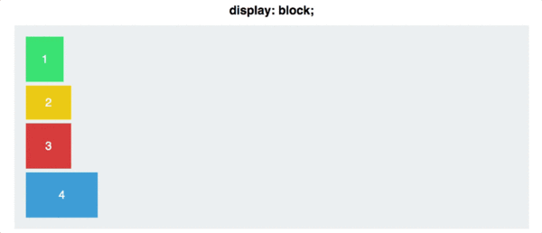
У flex-контейнера есть две оси: главная и перпендикулярная ей. По умолчанию все предметы располагаются вдоль главной оси — слева направо. Именно поэтому блоки в предыдущем примере выстроились в линию, когда мы применили display: flex. А вот flex-direction позволяет вращать главную ось.
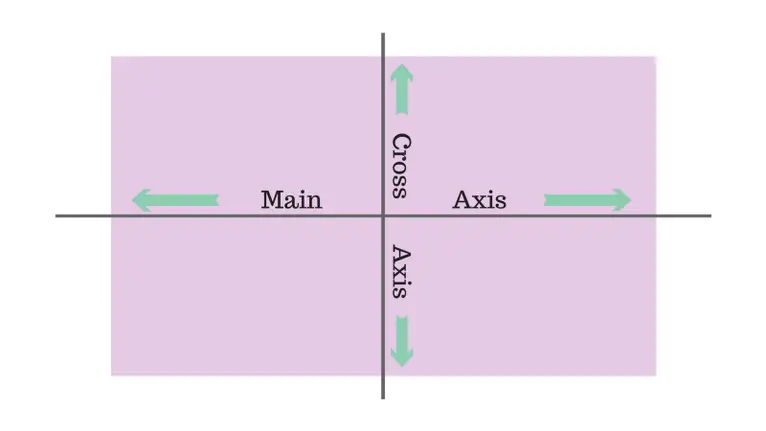
.container {
display: flex;
flex-direction: column;
}
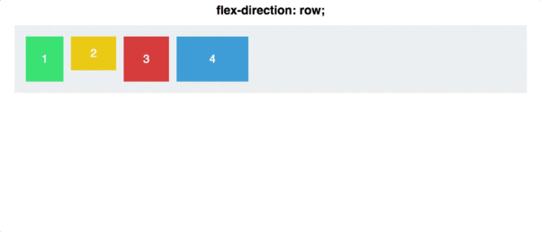
Обратите внимание, что flex-direction: column не выравнивает блоки по оси, перпендикулярной главной. Главная ось сама меняет своё расположение, и теперь направлена сверху вниз.Есть ещё парочка свойств для flex-direction: row-reverse и column-reverse.
Отвечает за выравнивание элементов по главной оси:
.container {
display: flex;
flex-direction: row;
justify-content: flex-start;
}
Justify-content может принимать 5 значений:
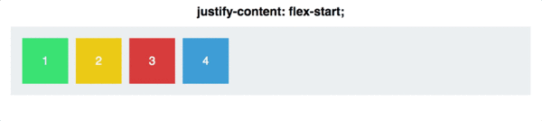
Space-between задаёт одинаковое расстояние между блоками, но не между контейнером и блоками. Space-around также задаёт одинаковое расстояние между блоками, но теперь расстояние между контейнером и блоками равно половине расстояния между блоками.
Если justify-content работает с главной осью, то align-items работает с осью, перпендикулярной главной оси.
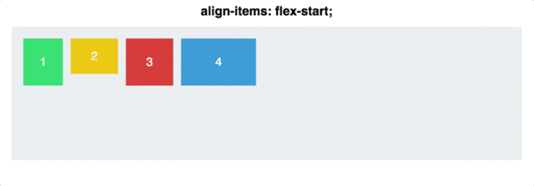
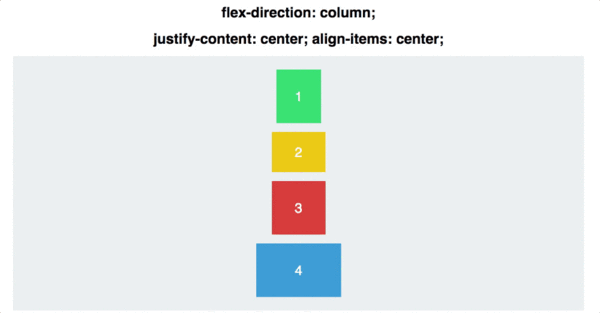
Позволяет выравнивать элементы по отдельности:
.container {
align-items: flex-start;
}
.square#one {
align-self: center;
}
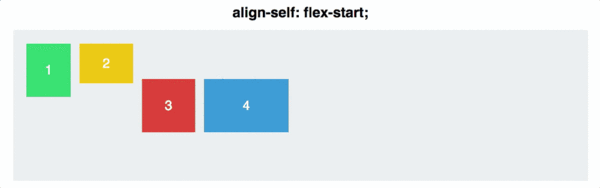
Для двух блоков применим align-self, а для остальных — align-items: center и flex-direction: row.
Отвечает за изначальный размер элементов до того, как они будут изменены другими свойствами CSS Flexbox. flex-basis влияет на размер элементов вдоль главной оси.
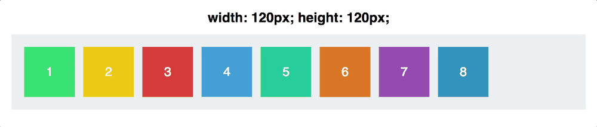
Давайте посмотрим, что случится, если мы изменим направление главной оси:
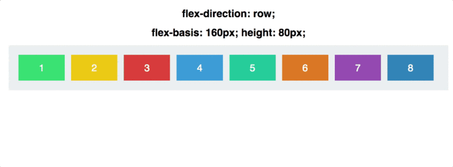
Заметьте, что нам пришлось изменить и высоту элементов: flex-basis может определять как высоту элементов, так и их ширину в зависимости от направления оси.
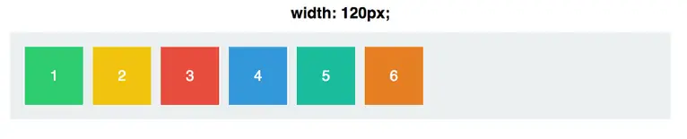
Для начала зададим блокам одинаковую ширину в 120px: По умолчанию значение flex-grow равно 0. Это значит, что блокам запрещено увеличиваться в размерах. Зададим flex-grow равным 1 для каждого блока:
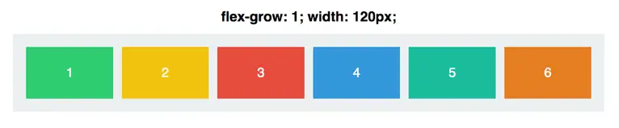
Теперь блоки заняли оставшееся место в контейнере. flex-grow: 1.
Попробуем сделать flex-grow равным 999
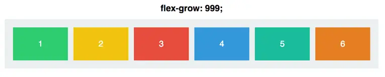
И… ничего не произошло. Так получилось из-за того, что flex-grow принимает не абсолютные значения, а относительные. Это значит, что не важно, какое значение у flex-grow, важно, какое оно по отношению к другим блокам:
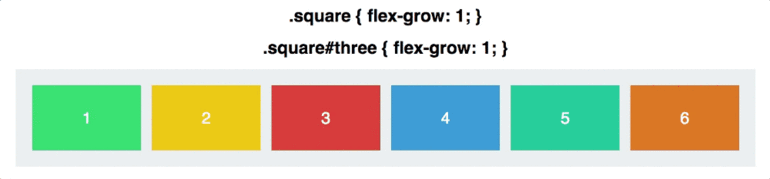
Вначале flex-grow каждого блока равен 1, в сумме получится 6.
Значит, наш контейнер разделён на 6 частей. Каждый блок будет
занимать 1/6 часть доступного пространства в контейнере. Когда
flex-grow третьего блока становится равным 2, контейнер делится на 7
частей: 1 + 1 + 2 + 1 + 1 + 1. Теперь третий блок занимает 2/7
пространства, остальные — по 1/7. И так далее.
flex-grow работает только для главной оси, пока мы не изменим её
направление.
Прямая противоположность flex-grow. Определяет, насколько блоку можно уменьшиться в размере. flex-shrink используется, когда элементы не вмещаются в контейнер. Вы определяете, какие элементы должны уменьшиться в размерах, а какие — нет. По умолчанию значение flex-shrink для каждого блока равно 1. Это значит, что блоки будут сжиматься, когда контейнер будет уменьшаться.Зададим flex-grow и flex-shrink равными 1:
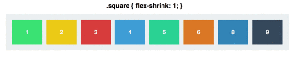
Теперь поменяем значение flex-shrink для третьего блока на 0. Ему запретили сжиматься, поэтому его ширина останется равной 120px:
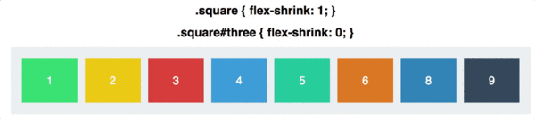
flex-shrink основывается на пропорциях. То есть, если у первого блока flex-shrink равен 6, а у остальных он равен 2, то, это значит, что первый блок будет сжиматься в три раза быстрее, чем остальные.
Заменяет flex-grow, flex-shrink и flex-basis. Значения по умолчанию: 0 (grow) 1 (shrink) auto (basis).Создадим два блока:
.square#one {
flex: 2 1 300px;
}
.square#two {
flex: 1 2 300px;
}